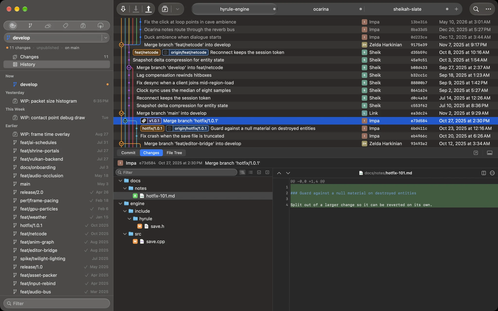
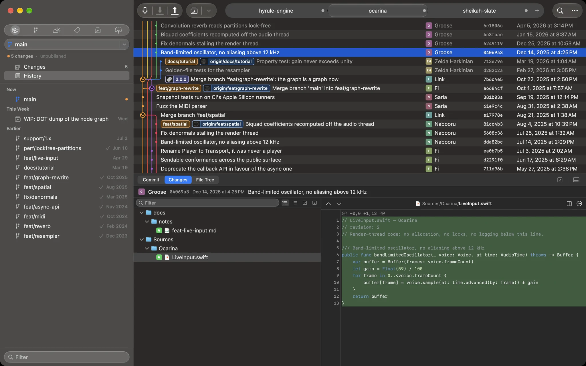
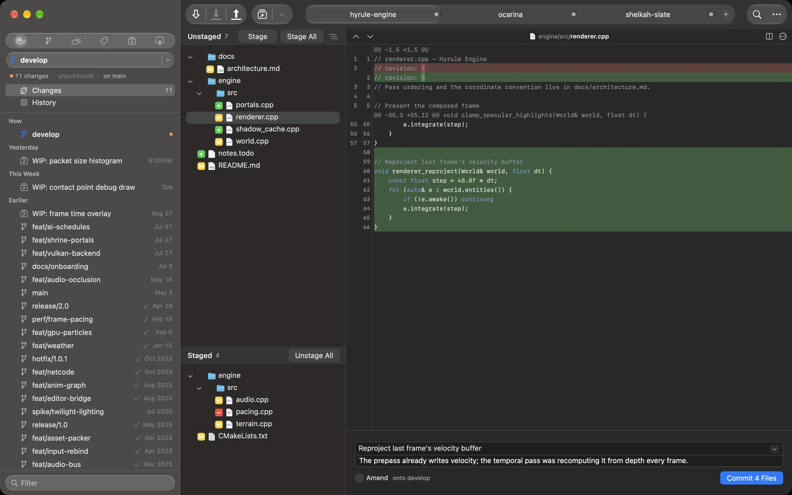
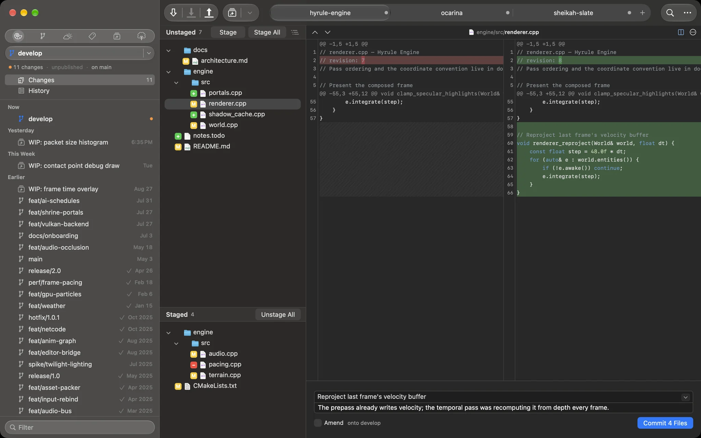
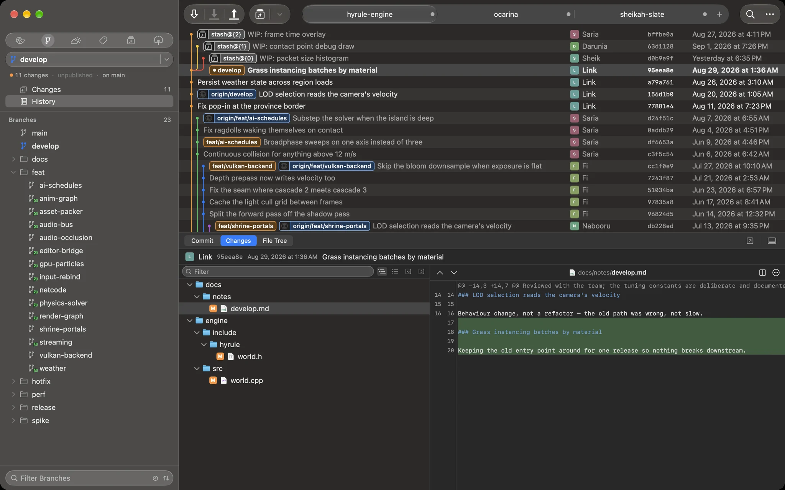
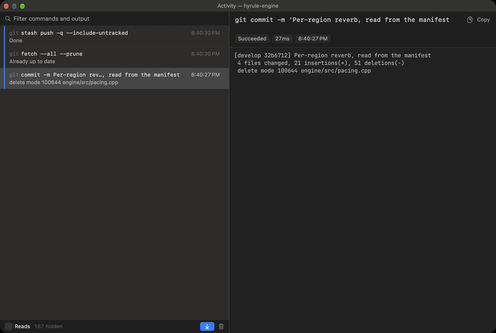
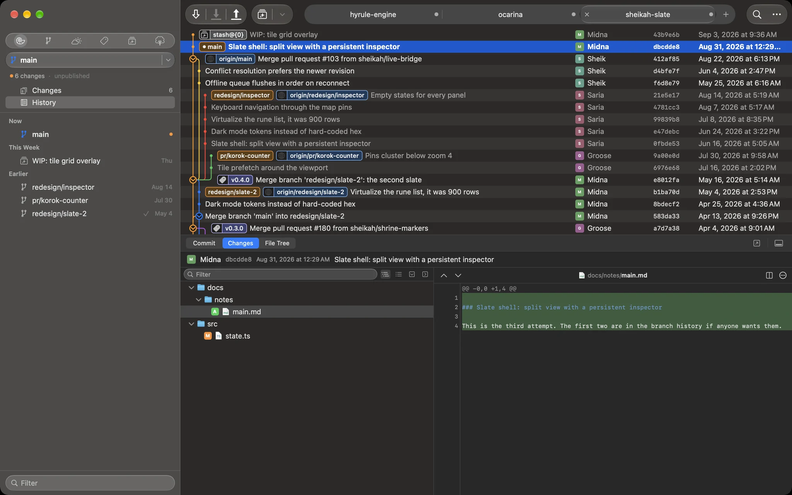

Deku
A Git client that feels like a Mac app.
Download for macOS · v0.2.16Requires macOS 15+ · Apple Silicon · Signed and notarized

A real Mac app
System fonts, system controls, system density, full dark mode. No web view, no Electron, no cross-platform compromise.
A graph that keeps up
Thousands of commits and still smooth. Branch lanes hold their colour, and merges, tags and refs sit on the row they belong to.
Stage the way you think
Stage a file, a hunk or a single line. Stashes, conflicts and untracked files all live in one Changes view.
Nothing lost in translation
Fetches, pushes and credential prompts show you what git actually said — colour, progress and the real error text.
Diffs you can read
Syntax highlighting, context you can expand a few lines at a time, and a side-by-side view when you need both revisions at once.
Every repo in one window
Tabs for your repositories, restored across launches. Drag a branch onto another to merge, rebase or check out.
A look around

Follow a branch through a crowd
A lane keeps its colour for the life of a branch, so a maintenance line that has run
beside main for two years stays one thread instead of scattering across the
window. Releases, hotfixes and the merges back sit on the row they happened on, next to
who did it and when.

Commit what you meant to commit
Unstaged above, staged below, and the diff for whichever file you are on beside them. Take the whole file, one hunk, or a single line — and write the message while the change is still in front of you, so nothing rides along by accident.

Unified or side-by-side, one keystroke apart
Read a change as one column or two, whichever suits the screen you are on. Neither view gives anything up: the same highlighting, the same word-level marks inside a changed line, the same context to pull in when you need more of it.

Twenty-three branches, five folders
Branches sharing a prefix collapse into folders and sort by when you last touched them, so a busy repository stays a short list. Stashes, tags, remotes, submodules and worktrees are each one click away, and one filter field narrows whichever you are looking at.

See exactly what git said
Every fetch, push, commit and stash is listed with how long it took and whether it worked, and picking one shows git's own output the way your shell would have printed it. When something fails you get the real message, not a friendly paraphrase of it.

One window, all your repositories
Keep everything you are working on in a single window and switch with a click. Drag to reorder, drag one out to give it a window of its own, and it all comes back at the next launch — each tab on the branch and the view you left it on.
Download Deku
A signed, notarized build. No installer, no login, no telemetry.
Download for macOS · v0.2.16- Requires
- macOS 15 Sequoia or later
- Architecture
- Apple silicon
- Signing
- Developer ID, notarized by Apple
- Price
- Free while it is in early days
Installing
- Unzip the download — Safari does it for you.
- Drag Deku.app into Applications.
- Open it. Because the build is notarized, Gatekeeper lets it through the first time; there is no right-click-Open dance.
Updating
Download the new build and replace the old app. Deku keeps its settings and your open
tabs in ~/Library, so an update comes back to the same desk you left.
If something is wrong
Deku never rewrites history you did not ask it to, but it is early software and it is my side project. Keep your backups.